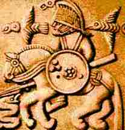

Wednesday
The Greek and Roman God "Hermis" or "Mercury" respectively giving his namesake to the planet Mercury was the basis for the name Wednesday. The English version however was derived from the corresponding Norse God "Wodan" (Odin) and the day being referred to as "Woden’s day". The mythological God Hermis, Mercurii, or Odin was the god of wisdom, travel, commerce, and even theft. It is also believed that Santa Claus was derived from the Viking God Odin.